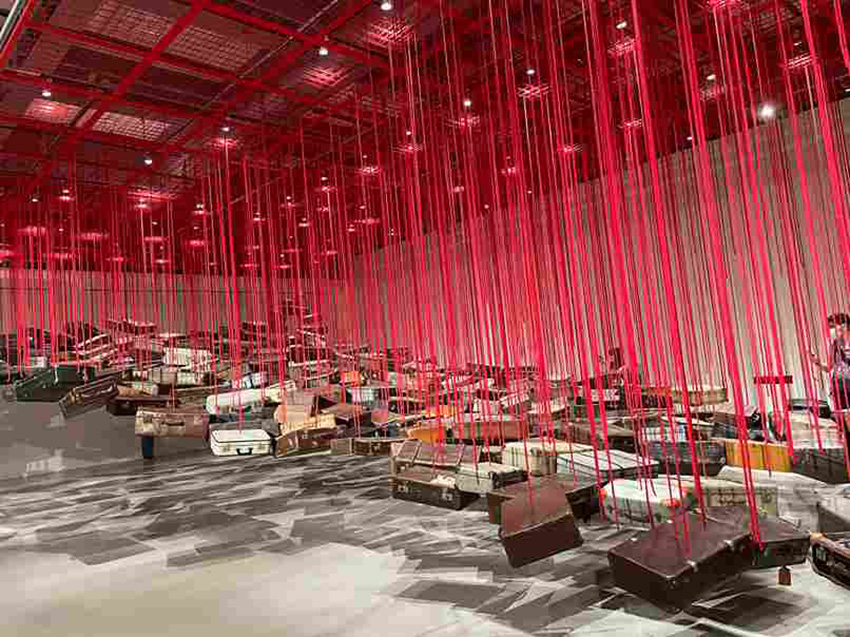
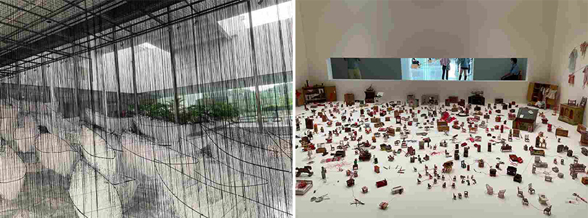
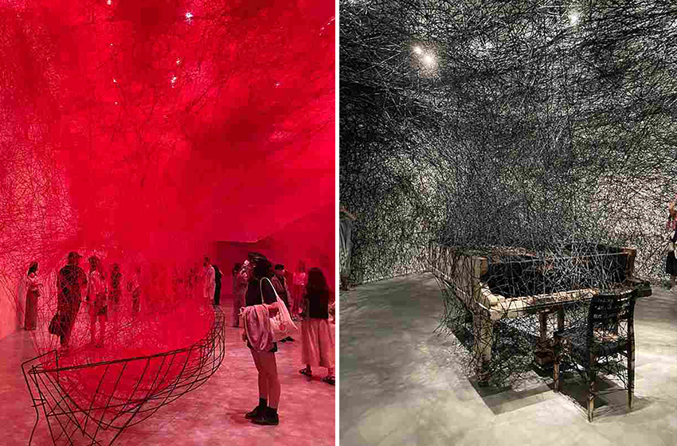
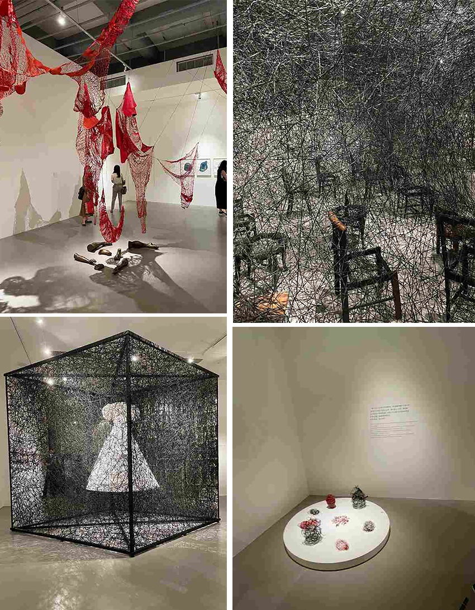

塩田千春是日本著名的當代藝術家，我此生有幸參觀了兩場塩田千春的展覽。整體的展覽最能引起我震撼的便是由紅線、白線或黑線千絲萬縷勾勒出無法計數的線條，縱貫整個空間的各個作品。這也是塩田的代表系列，藉由各色線條創作出具有衝擊力與渲染力的藝術來暗指各式各樣的事物有著錯綜複雜的連結，同時由作品中了解塩田千春的故事，也激發我們思索生命的意義。由塩田對於藝術色彩的詮釋，帶領我了解白色是生與死的起點終點，紅色是人跟人之間的關係與線索，黑色是巨大的夜空與深邃的宇宙。
|  |
後疫情時代在世界各地皆有塩田的一場場展覽，哥本哈根、澳洲、曼谷、紐約等美術館皆有它的足跡，現在正在瑞士巡迴展出中。而我印象中的第一件作品便是懸浮在空中的〈去向何方〉，由白色的線交織纏繞而成宛如羽毛般純潔的飛船，由於兩側的透明玻璃有自然的陽光透進來，不用特別的燈光照明，就有驚豔的視覺享受。關於白色線條所代表的是象徵著純淨潔白，一個開始，然而日本的喪禮與西方的喪禮多以黑色代表不同，也經常出現白色的菊花及穿著白衣的喪服，所以白色也象徵著結束。人從出生就注定了有一天需面臨死亡，而在茫茫的生涯中我應去向何方。
|  |
印象最深的大型作品便是由紅色的線貫穿整個藝廊〈不確定的旅程〉彼此糾纏、交織、斷裂、分解，正是映照出人內心世界，也因為人的血液也是紅色的，彷彿在表現人與人之間不同的關係狀態。不在中的存在，才是最深刻的存在，在〈裙〉這件作品我看到懸掛吊著美麗洋裝，它描述著曾經是某個人身體的容器，是人的第二層肌膚，陪伴著某個人度過一段生活，雖然人不在了，並不表示洋裝就沒有生命了，人離開了，回憶依舊存在這個世界。〈寂靜〉此作品是塩田把九歲那段童年回憶，重新還原打造出來的藝術作品。夜晚發生熊熊大火在黑夜裡燃燒，發出猛烈的木頭聲響，而此引發了無法說出口的恐懼感。而角落裡有座被燒毀的鋼琴，雖然鋼琴再也發不出聲音了，但在一片寂靜裡，燒毀的鋼琴，卻彈奏出一首首無聲奏鳴曲。藉用交錯複雜的黑線穿插、串聯，正是代表每個人心底想要說卻說不出口，千頭萬縷的思緒，從內心穿透到外在的宇宙，更呈現出人與人之間相互羈絆、纏繞拉扯的關係。
|  |
每個作品皆有屬於它的動人故事，塩田藉著不同的展場牆面，巧妙放置創作的作品，而每一件作品皆是當時心底的感受，彷彿不用語言的藝術來表達的日誌分享，正在世界各地精確展現著。每件藝術創作都讓人深刻省思，也許像塩田說的:「靈魂與靈魂之間的相互共振與感應」，人在生命走到結束時，死亡並不是化為虛無、遭到世間的遺忘，而是走過的痕跡皆留下回憶，與人之間的連結與羈絆。
|  |